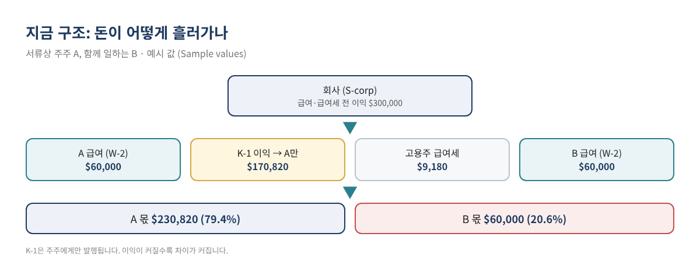
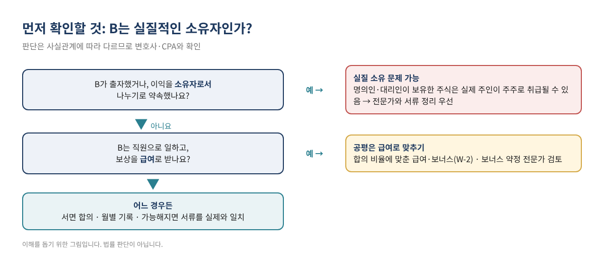
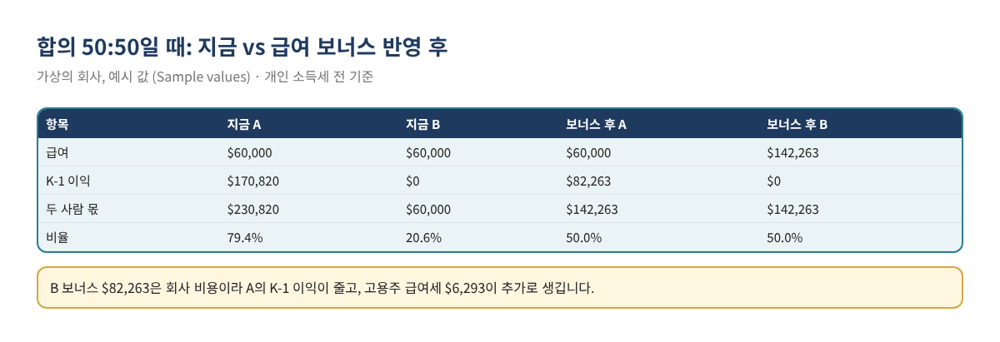

S-corp 서류상 주주는 1명, 같이 일하는 사람은 2명: 이익을 공평하게 나누는 계산법 (무료 엑셀)
두 사람이 함께 시작한 사업인데, 여러 사정으로 LLC(S-corp 선택) 서류에는 한 사람만 주주(멤버)로 올라가 있는 경우가 있습니다. 두 사람 모두 급여(paycheck)를 받지만, 연말에 회사 이익이 담긴 Schedule K-1은 서류상 주주 한 사람에게만 나옵니다. 그러면 "이익은 반반 나누기로 했는데, 실제로는 누가 얼마를 가져간 것인가?"라는 질문에 아무도 정확히 답하지 못합니다.
이 글은 이 상황을 숫자로 정리합니다. 지금 구조에서 두 사람 몫이 어떻게 갈리는지, 합의한 비율과 얼마나 차이 나는지, 그리고 서류를 당장 바꿀 수 없을 때 급여(W-2) 구조로 차이를 메우려면 얼마가 필요한지를 엑셀 계산기로 바로 볼 수 있게 했습니다. 계산기는 무료 키트 다운로드에서 받을 수 있습니다.
이런 분께 필요합니다: S-corp으로 세금 신고하는 LLC·법인에서 서류상 주주는 한 명인데 두 사람이 실제로 함께 일하고 이익을 나누기로 한 경우 / 두 사람 모두 급여를 받는데 K-1은 한 사람만 받는 경우 / 공평한 분배 기준을 숫자로 정리해 두고 싶은 경우.
먼저 알아 둘 점: 이 글은 "서류에 없는 사람에게 이익을 몰래 나눠 주는 방법"이 아닙니다. 세법상 주주가 아닌 사람은 급여를 받는 직원으로 보상받는 것이 기본이며, 실제로는 소유자인데 서류에만 없다면 그 자체가 정리해야 할 문제일 수 있습니다. 아래 2번을 꼭 먼저 읽어 주세요.
1. 지금 구조에서는 왜 불공평해 보이나
IRS Form 1120-S 작성 안내는 S-corp의 소득·손실 항목을 주주가 그해 날마다 보유한 주식 수에 따라 배분하고, 그해 주주였던 사람에게 Schedule K-1을 주도록 합니다(Instructions for Form 1120-S (2025)). 서류상 주주가 A 한 명이면 회사 이익(K-1)은 전부 A에게 배분됩니다. B는 급여만 받습니다.
결과적으로 회사 이익이 클수록 두 사람 몫의 차이도 커집니다. 동시에, K-1 소득은 A의 개인 세금 신고서에 들어가므로 세금 부담도 A에게 몰립니다. "A가 더 가져간다"와 "A가 세금을 더 낸다"가 동시에 일어나서 어느 쪽이 손해인지 감으로는 판단하기 어렵습니다.

2. 계산 전에: B는 실질적인 소유자인가?
세법은 서류의 이름만 보지 않습니다. 재무부 규정 1.1361-1(e)(1)은 명의인(nominee)·대리인 등이 대신 보유한 주식은 실제 주인을 주주로 본다고 정합니다(26 CFR 1.1361-1). B가 돈을 출자했거나, 소유자로서 이익을 나누기로 약속했다면 B가 세법상 주주로 취급될 가능성을 검토해야 합니다. 이 경우 K-1 배분, S-corp 자격 요건 등이 함께 걸리므로 변호사·CPA와 서류를 정리하는 것이 먼저입니다.
또 S-corp은 주식 종류가 하나여야 하며, 모든 주식이 분배와 청산에서 같은 권리를 가져야 합니다. 이 판단은 정관·운영 규정·주법과 분배에 관한 구속력 있는 약정(governing provisions)을 기준으로 합니다. 고용 계약 같은 일반 계약은 이 규칙을 피하려는 것이 주된 목적이 아니면 여기에 포함되지 않는다고 규정은 설명합니다(26 CFR 1.1361-1(l)). 그래서 "B에게 이익의 절반을 분배한다"는 약속은 위험할 수 있고, 지분을 대신하려는 성격의 보너스 약정도 전문가 검토가 필요합니다.

| 구분 | 서류상 주주 A | 서류에 없는 B |
|---|---|---|
| 세법상 지위 | 주주 + 직원 | 직원 (실질 소유 여부는 따로 검토) |
| 받는 돈 | 급여(W-2) + K-1 이익, 분배(배당) | 급여(W-2)만 |
| 급여 기준 | 분배 전에 합리적 급여 필요 (IRS) | 합의한 보상 (급여·보너스) |
| 세금 | 급여: 급여세 + 소득세 / K-1: 소득세 | 급여: 급여세 + 소득세 |
| 서류 | K-1, W-2 | W-2 |
표 1. 두 사람의 세법상 위치 비교. 일반적인 구조이며 실제 판단은 사실관계에 따라 다릅니다.
3. "공평"을 숫자로 정의하기
계산기는 다음과 같이 정의합니다. 회사의 급여·고용주 급여세 차감 전 이익에서 고용주 급여세를 뺀 금액이 두 사람에게 돌아가는 "몫"입니다. A의 몫은 A 급여 + K-1 이익, B의 몫은 B 급여입니다. 두 사람이 합의한 비율(예: 50:50)과 실제 비율을 비교합니다.
- 합의 비율 정하기. 투입 시간, 역할, 초기 투자 등을 고려해 두 사람이 비율을 정하고 서면으로 남깁니다.
- 회사 이익 확인. 손익계산서의 순이익에 A·B 급여와 그 급여의 고용주 급여세를 더해 "급여 전 이익"을 구합니다.
- 현재 비율 계산. 계산기 2번 표가 자동 계산합니다.
- 차이를 급여로 메우는 금액 확인. 계산기 3번이 B에게 필요한 추가 급여(보너스)를 고용주 급여세까지 반영해 계산합니다.
- 세후 비교. 두 사람의 추정 실효세율을 넣으면 4번 표가 세후 금액을 보여 줍니다.
- 월별 기록. Monthly_Log 시트에 실제 급여와 분배를 기록하고 연말 목표와 비교합니다.
| 적용 세율 (2026) | 고용주 | 직원 | 출처 |
|---|---|---|---|
| 사회보장세 (Social Security) | 6.2% | 6.2% | IRS Topic 751 |
| 메디케어 (Medicare) | 1.45% | 1.45% | IRS Topic 751 |
| 사회보장세 과세 상한 | 연 $184,500까지 | 같음 | IRS Topic 751, Pub 15 (2026) |
| 추가 메디케어세 | 없음 | 연 $200,000 초과 임금의 0.9% | IRS Topic 751 (계산기에는 미반영) |
표 2. 계산기에 쓰는 연방 급여세율. 주 급여세·소득세는 포함하지 않습니다.
4. 따라 해 보기: 가상의 회사 예시
가상의 회사가 있습니다. 급여 전 이익은 $300,000이고, A와 B 모두 연 $60,000의 급여를 받으며, 두 사람은 50:50으로 나누기로 합의했습니다(모두 예시 값).
| 항목 | A | B | 합계 |
|---|---|---|---|
| 급여 (W-2) | $60,000 | $60,000 | $120,000 |
| 고용주 급여세 (7.65%) | $4,590 | $4,590 | $9,180 |
| K-1 이익 | $170,820 | $0 | $170,820 |
| 두 사람 몫 | $230,820 | $60,000 | $290,820 |
| 실제 비율 | 79.4% | 20.6% | 100% |
| 합의 금액 (50%) | $145,410 | $145,410 | $290,820 |
| 차이 | +$85,410 | −$85,410 |
표 3. 현재 구조 계산. 예시 값 / Sample values.
B가 $85,410 부족합니다. 그런데 B에게 보너스를 $85,410 주면 끝나는 것이 아닙니다. 보너스는 회사 비용이라 A의 K-1 이익이 줄고, 고용주 급여세도 늘어나 전체 몫이 줄어듭니다. 계산기는 이를 반영해 필요한 보너스를 (합의 비율 × 합계 − 현재 B 몫) ÷ (1 + 합의 비율 × 고용주 세율)로 구합니다. 예시에서는 $85,410 ÷ 1.03825 ≈ $82,263입니다.

| 항목 | 보너스 후 A | 보너스 후 B |
|---|---|---|
| 급여 | $60,000 | $142,263 |
| K-1 이익 | $82,263 | $0 |
| 두 사람 몫 | $142,263 | $142,263 |
| 비율 | 50.0% | 50.0% |
| 늘어난 고용주 급여세 | $6,293 (회사 부담, 두 사람이 비율대로 나눠 진 셈) |
표 4. 보너스 반영 후. 예시 값 / Sample values.
세후로 보면 결과가 조금 달라집니다. 급여에는 직원 부담 사회보장·메디케어세가 붙지만 K-1 이익에는 붙지 않기 때문입니다. 두 사람 모두 실효세율 24%(예시 추정치)로 넣으면 보너스 후 세후 비율은 약 51.6% : 48.4%입니다. 세전 기준으로 맞출지, 세후 기준으로 맞출지도 합의서에 적어 두는 것이 좋습니다.
보너스 구조의 한계: 예시처럼 B 급여가 A보다 훨씬 커지면, A는 대부분을 분배로 받게 됩니다. IRS는 주주이면서 일하는 사람은 분배 전에 합리적 급여를 받아야 한다고 안내하므로(아래 출처), A의 급여 수준도 함께 검토하세요. 또 보너스가 실질적으로 지분을 대신하는 장치로 보이지 않도록 지급 기준(성과·역할)을 문서로 남기고 전문가와 확인하세요.
5. 엑셀 계산기 구성
| 시트 | 내용 | 입력할 곳 |
|---|---|---|
| Start | 사용법, 주의 사항, 세율 출처 | 없음 |
| Calculator | 현재 분배, 보너스로 맞추기, 세후 비교, 경고 | 노란 칸 (이익, 급여, 합의 비율, 추정 세율) |
| Monthly_Log | 월별 급여·보너스·A 분배 기록, B 목표 대비 남은 금액 | 노란 칸 (매달) |
| Checklist | 연간 점검 항목 | ☐ 체크 |
표 5. 무료 계산기 시트 구성. 예시 값이 들어 있으니 덮어쓰세요.
계산기는 무료 키트 다운로드에서 받을 수 있습니다. 한국어 설명이 함께 들어간 EN_KR판과 영어판이 있습니다.
6. 자주 하는 실수
- B에게 "분배(배당)"로 돈을 줌. 주주가 아닌 사람에게 주주 분배를 할 수는 없습니다. B에게 가는 돈은 급여로 처리하세요.
- "이익 반반" 구두 약속만 있음. 나중에 분쟁이 생기면 근거가 없습니다. 합의 비율과 기준(세전/세후)을 서면으로 남기세요.
- 보너스를 연말에 한 번에 정함. 회사 현금과 A의 세금 납부 계획이 어긋납니다. Monthly_Log로 분기마다 점검하세요.
- A의 세금을 잊음. K-1 이익은 실제로 분배받지 않아도 A의 신고서에 들어갑니다. 세금 낼 현금을 따로 계획하세요.
- 서류 정리를 미루기만 함. 계산기는 임시 해결책입니다. 가능해지면 소유 서류를 실제와 맞추세요.
7. 자주 묻는 질문
B에게 K-1을 일부 나눠 줄 수는 없나요?
K-1은 주주에게 보유 주식 수에 따라 배분됩니다. 서류상 주주가 아닌 사람에게 임의로 나눌 수 없습니다. B가 실질 소유자라면 서류 정리 문제이므로 변호사·CPA와 상의하세요.
B가 "이익의 절반을 받기로 했다"는 약정서를 써도 되나요?
분배에 관한 구속력 있는 약정은 S-corp의 주식 종류 판단에 쓰이는 문서에 포함될 수 있고, 실질 소유 문제도 생길 수 있습니다. 이런 약정은 작성 전에 반드시 전문가 검토를 받으세요.
세전 50:50과 세후 50:50 중 무엇이 공평한가요?
정답은 없습니다. 두 사람의 다른 소득, 거주 주에 따라 세율이 다르기 때문입니다. 계산기는 두 기준을 모두 보여 주니, 어느 기준을 쓸지 합의해 두세요.
A가 B에게 개인 돈으로 차액을 주면 안 되나요?
개인 간 송금은 성격(증여, 대여, 지분 대가 등)에 따라 세무 결과가 완전히 달라지고 기록도 남지 않습니다. 회사를 통해 급여로 처리하는 것이 추적과 신고가 명확합니다. 다른 방식을 고려한다면 먼저 전문가와 상의하세요.
장부에는 어떻게 기록하나요?
B의 보너스는 급여 서비스(payroll)를 통해 지급하고 급여 비용으로 기록합니다. 외부 급여 서비스를 쓴다면 외부 급여 기록 가이드를 참고하세요. 보너스 실수령액을 맞추는 방법은 보너스 그로스업 가이드에 있습니다.
8. 셀프 체크리스트
- ☐ B가 실질적인 소유자인지 전문가와 검토했다
- ☐ 공평 비율과 기준(세전/세후)을 서면으로 합의했다
- ☐ B에게 가는 돈은 모두 급여(W-2)로 처리한다
- ☐ A는 분배 전에 합리적 급여를 받는다
- ☐ 계산기에 올해 이익과 급여를 넣어 필요한 보너스를 확인했다
- ☐ Monthly_Log를 매달 기록한다
- ☐ A의 K-1 소득세 납부용 현금을 계획했다
- ☐ 서류를 실제와 맞출 시기를 정해 두었다
관련 글
이 글과 계산기는 일반적인 교육용 정보이며 세무·법률·재무 자문이 아니고, 어떤 결과도 보장하지 않습니다. 소유권, S-corp 자격, 급여 수준, 보너스 약정에 관한 판단은 사실관계와 주법에 따라 달라지므로 변호사와 CPA에게 확인하세요. 세율과 과세 상한은 매년 바뀌므로 IRS 최신 안내를 확인하세요. 예시의 회사와 금액은 모두 가상입니다.
무료 키트 다운로드
글에서 설명한 내용을 그대로 따라 할 수 있는 도구입니다. 가입 없이 바로 받으세요.
- Excel 계산 도구 (.xlsx)SCorp_Fair_Split_Calculator_2026_EN_KR.xlsx · 21 KB
본인과 본인 사업에 무료로 쓰세요. 재판매·재배포는 하지 마세요. 일반 정보이며 세무·법률·회계 자문이 아닙니다. 숫자는 본인 자료로 꼭 확인하세요.
출처
- IRS, Instructions for Form 1120-S (2025) — Shareholder's Pro Rata Share Items, Line 7 Compensation of Officers
- Cornell LII, 26 CFR 1.1361-1, S corporation defined — (e)(1), (l)
- IRS, S corporation compensation and medical insurance issues
- IRS, Topic no. 751, Social Security and Medicare withholding rates
- IRS, Publication 15 (2026), Employer's Tax Guide